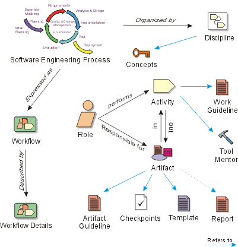
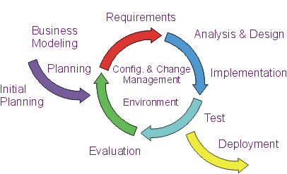
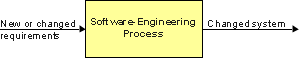

Key Concepts

[Click on an item in the image above to
get more information on that key concept in RUP.]
A process is a set of partially ordered steps intended to reach a goal; in
software engineering the goal is to build a software product, or to enhance
an existing one; in process engineering, the goal is to develop or enhance a
process. In RUP, these are organized into a set of disciplines to further define
the workflows and other process elements.

Expressed in terms of business modeling, the software development process is
a business process; the Rational Unified Process (RUP) is a generic business
process for object-oriented software engineering. It describes a family of related
software engineering processes sharing a common structure, a common process
architecture. It provides a disciplined approach to assigning tasks and responsibilities
within a development organization. Its goal is to ensure the production of high-quality
software that meets the needs of its end users, within a predictable schedule
and budget. The RUP captures many of the best practices in modern software development
in a form that can be tailorable for a wide range of projects and organizations.
When a software system is developed from scratch, development is the process
of creating a system from requirements. But once the systems has taken form
(or in our terms, once the system has passed through the initial development
cycle), any further development is the process of conforming the system to the
new or modified requirements. This applies throughout the system's lifecycle.

The software-engineering process is the process of developing
a system from requirements, either new (initial development cycle) or changed
(evolution cycle).
Copyright
© 1987 - 2001 Rational Software Corporation
|  Overview >
Overview >
 Key Concepts
Key Concepts